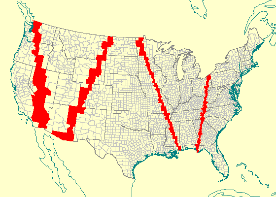

Hipparchus (the astronomer, 180-125 B.C.) was the first to successfully use numbers and algebraic operations to define and describe a spatial object larger than a land parcel. From his time on, it was common to use planar computations for operational systems dealing with local phenomena, and spherical or spheroidal for the systems dealing with global phenomena.
Two millennia later, the algebra is carried out by electronic devices, and there is an ever greater need to treat both local and global phenomena in a single operational computer system - and thus in a single computational frame of reference.
Hipparchus (the software product) represents an emerging class of computational devices which no longer restrict the numerical modeling of spatial objects - whether global or local - to planar coordinate systems. In doing so, it offers system builders the tools required to integrate seamlessly all possible classes of spatial objects in a single computational frame of reference.
This is achieved by numerically representing the global location of a point not by the common latitude and longitude in angular measure, but by using three direction cosines instead. It is however important to note that the geometry object thus represented is the same one as that which is represented by latitude and longitude: the spatial direction of the normal to the ellipsoidal surface.
Another important element that lies at the heart of every computer system which manipulates large external collections of geographical data is the schema by which a surface on which the data resides is subdivided. Such subdivision is typically used for two important purposes: to retrieve from the external storage only those data items that are of use in a given context (for instance, create a graphical view of a small locale within the total data area), but also to restrict the amount of data that must be processed in order to derive a given spatial algebra production.
In the Hipparchus system, this subdivision is based on the spheroidal equivalent of a planar Voronoi tessellation. A detailed description of both essential elements (i.e., global geographical coordinate manipulation using direction cosines and a spheroidal Voronoi tessellation) is available from a web-resident publication titled: Hipparchus Geopositioning Model: an Overview.
The SORSA '99 symposium presentation was centered on an interaction of two particular computational elements of the Hipparchus software tool: an external representation of a collection of two-dimensional terrestrial objects ("regions") and on Hipparchus orbit modeler.
Hipparchus "region collection" is an organized external file containing a spatial definition of a potentially large number of regions ("collection members"). An application program can use such a file to find answers to a number of practical questions, such as:
What is the order and location of a member's boundary vertices?
Which parts of a screen window represent some member's interior?
Is a given point inside or outside a given collection member?
Which member or members have a given point inside them?
As the last proposition implies, a collection of regions is not a "categorical classification" schema; i.e., members can overlap, so that any point of the spheroidal surface can be inside more than one member. (It is worth noting here, that in many instances, an application designer's assumption that a given category of objects are by definition non-overlapping needs to be re-addressed during the life-cycle of the system: for instance, different high-order political entities claiming the same territory).
A region collection file is divided into three parts: index tables, a member structure definition and the coordinate repository. Index tables provide a fast mechanism for both principal searches: for an unknown member identifier from a known location, and for the unknown location-defining data from a given member identifier. The structure describes the relationship of a member and a set of Voronoi cells. The coordinate repository consists of all boundary vertices of all the collection members, given in local (cell) coordinates. It represents the majority of the data volume in the collection. This section is stored in cell order, so that - as much as possible when a multi-dimensional surface is mapped into a single dimension of file addresses - vertices that are near-by on the ground remain near-by in the disk file. In most computing environments such an arrangement results in faster external data access.
Finally, it should be noted that regions represented in the collection can be of any level of topological complexity (i.e., their boundary can consist of any number of rings, with an unrestricted level of "voids"), as long as the boundary rings do not cross each other, and as long as the condition of topological consistency of the ring directions is preserved.
In order to provide the computing facilities necessary for fast and high-volume correlation of terrestrial data (such as, for instance, the members of a region collection described above) and the visibility swath of a sensor mounted on an earth-orbiting satellite, the Hipparchus software tool includes a third-order orbit modeler. (Third-order is a term often used for orbit modelers which include proper resolution of the time/position relationship of an orbit of any degree of ellipsoidal eccentricity, and includes both the precession and the rotation of the apses). The orbit is defined by the classical orbit parameter set.
The Hipparchus orbit modeler can return both the instantaneous position of the satellite, as well as the elements of the external orientation of the sensor. These can be used to intersect a terrestrial object with the satellite nadir position (i.e., answer the question: "what is the satellite over at a given time"), or with the swath line (i.e., answer the question: "what does the satellite "see" at a given time).

Fig. 1: Satellite nadir trace
The above picture is a single "frame" from an animated display produced by the Hipparchus geographical "workbench" program called Galileo. An extensive User Guide for Galileo is available online; the program is available - as a self-extracting archive - for free download from Geodyssey's web server.
The image depicts a trace of a satellite nadir over a region collection consisting of more than 3200 United States counties, with more than 3.5 million boundary vertices. As the orbit modeler produces updated satellite location data (at the orbit-time intervals of 3 seconds) this is projected to the nadir point along the ellipsoid normal. The point location thus obtained is used as a location argument in a member search for the county over which the satellite is located. The screen fill-area is than evaluated and applied to the map.
All the above computations are carried out with sub-millimetric precision, inherent in the 64-bit direction cosine representation of the positions returned by the orbit modeler as well as those stored in the region collection file. The speed of computations (on a 100 Mhz Pentium processor) is several orders of magnitude above that of the orbit time passage.
The purpose of this presentation was to demonstrate primarily the efficiency with which the direction cosine global coordinate manipulation improves computational speed and precision. In addition, it provided a graphical demonstration of the manner in which complex data structures based on direction cosine coordinates (such as the Hipparchus region collection file) can be used for fast spatial search and visualization.